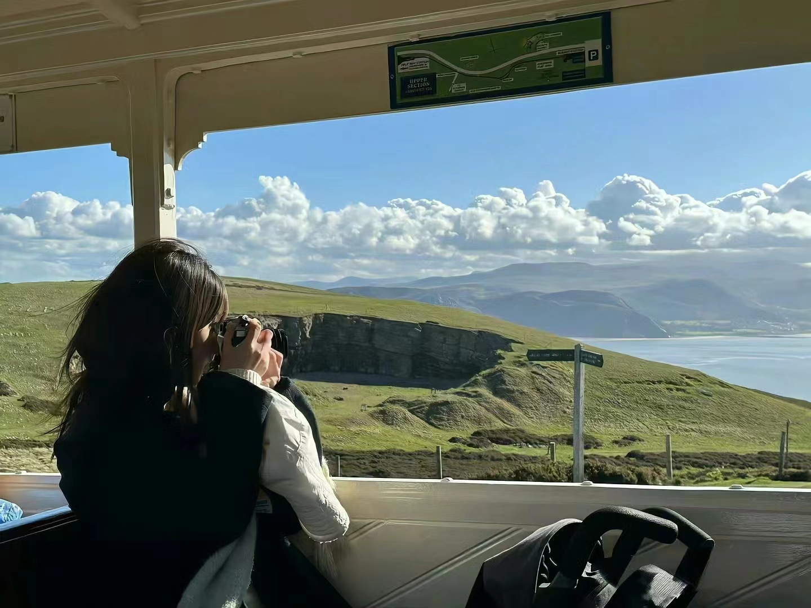

个人信息
| 姓名： | 李艳艳 |
|---|---|
| 性别： | 女 |
| 专业： | 计算机科学与技术 |
| 班级： | 1班 |
| 年龄： | 19 |
个人介绍
我生长在河南那片充满历史底蕴的土地上，那里有着丰富的文化遗产和淳朴的民风，这些都深深影响了我，使我拥有了热情、开朗的性格。 如今，我在湖北省的一所大学就读大二。来到这里，我感受到了浓厚的学术氛围和多元的文化碰撞。在这里，我遇到了来自五湖四海的同学，我们共同学习、共同进步，也一起度过了许多难忘的时光。 此外，我还喜欢阅读、旅行和摄影，这些爱好不仅让我开拓了眼界，也让我更加珍惜生活中的美好瞬间。